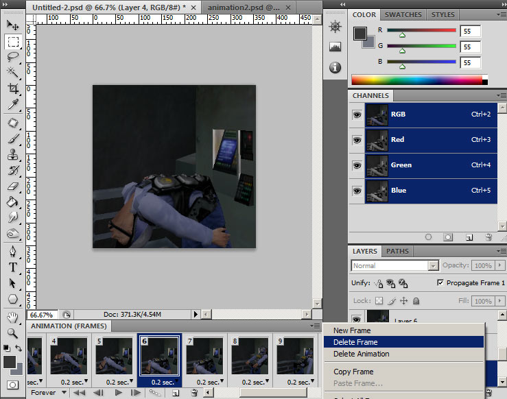

Tutorial 3: Creating Animated Sprays
Animated spraylogos are looping animations that can either be non-transparent or transparent, however some compromises must be made. With animated sprays, you are going to have to watch your spraylogo filesize carefully. Reducing filesizes is done by reducing resolution and occasionally creating sprays without mipmaps. A third way is making a 2:1 or 1:2 ratio spray, but that has its issues as well.
Animated spraylogos go at a constant rate of roughly 5 frames per second. This cannot be changed, so you are going to have to make your animation frames fit this rate of motion. I have built this chart for all the possible sizes under the old spraylogo limit and the new spraylogo limit:
Note: I did omit 64X64 size from the new standard chart.Now the process for making individual frames can be the same as static frames, only difference is importing all of the frames into VTFEdit to compile into an animated VTF. But what if you just want to quickly import part of a video file or an animated gif? There are time saving methods and I will go over them.
Animated Sprays Method 1:
Individual Frames
If you have made several frames yourself conforming to the spraylogo system limits on the chart, you are all ready to go. For example, here I have 7 targa files at 128X128 with transparency made with the same methods as in Spraylogo Tutorial 2. Now since building with multiple frames can be time consuming, this is where you might want to go with using PNG's for Transparent animated sprays.
Open VTFEdit and go to Import. Now sort your window files so they go from 1st to last top to bottom like so. Click on the first frame and hold shift and drag to the last frame.
Now since I am making this animated spray that conforms to the old source engine limit, I have to keep it under 120kb. Checking the chart, I have 7 frames @128X128 resolution, so I need to make this without mipmaps. I uncheck the box.
Now if you press the play button you will see the frames go like so. Now VTFEdit previews the frames at 30ish frames a second so it will go fast.
To be sure you are under the limit, you can simply click the Info tab in VTFEdit and see the filesize as well as some other stats. Save it in your desired spraylogo directory like you did in Tutorial 1 & 2.
Here is the final spray in game.
Animated Sprays Method 2:
Importing Video Frames To Layers
A great feature Photoshop has is the import video frames option. This can take certain types of video files and put them into layers for animation preparation. One problem is that it does not read all video file types. If this option does not work, you can use "load files into stack". So first off Ill show "Import Video Frames" which can be found in File>Import>Video Frames To Layers:
Now select your range and be sure "make frame animation" is checked. Now what's going to happen here is that it will import all the frames in your selected range, so since most videos are at 30fps you will get a lot of frames. Now to cut down on the amount imported, specify the limit. This can be a little tricky since if you limit too much, you will have either not enough frames, or jerky motion, or if you dont limit at all, you will be dealing with a lot of frames to sort through. However if you have more frames you can pick out and manually adjust the motion better to best suit your animation.
Once imported, all the frames will be loaded into layers window and the animation tab will be set with the animation and frames all ready to go. First off, we are gonna want to adjust the frame delay to match that of the spraylogo framerate. Click the little list tab on the animation window and select all frames.
Right-click the "sec" area at the bottom of the frame and set to 0.2 seconds.
If "Import Video Frames To Layers" did NOT work*, or you want to import individual files...
*Your video will have to be exported to individual frames from a video editor.Then go to File>Scripts>Load Files Into Stack...
Select your frames, via Browse or Open files.

With this option it will just load files into your layers, so you will have to click the animation tab and make frames from layers. Then like the previous method, select all frames and then set the per-frame delay for all frames to "0.2". One last thing is if your frames are going backwards, open the same animation menu with all frames selected and click "Reverse Frames".
If you used either method, this is where we will continue:

With your video frames imported and the frames delay set to 0.2, you can now set a square aspect selection holding shift-click and crop the image. When in animation mode, do NOT touch the layer visibility in the layers window (it will affect the animation at this point). Only touch the frames in the animation tab.
With the fame cropped, I pressed the play button to see how things are going. I have 11 frames which is well within the limits of the spray I want to make, but the animation does not loop quite right and its a little slow to my liking.

Go through the frames in your animation window and click the window menu to delete any frames that you deem unnecessary, or re-arrange them to your preference.
I deleted a few frames and this is the result I am going with.
If needed, put a "Levels" layer adjustment. Make sure to make it at the top of the layer window so it affects all frames.
When done with your image enhancement, click the animation window tab menu to Flatten Frames Into Layers. This will take everything from your animation window and flatten them into a list of layers into your layers window. This applies the Levels adjustment layer to the frames and names them as "frame 1..2..3..ect".

Resize the image. Since im making an animated spray for the old 120kb standard, I am using 128X128 resolution.
When your frames are flattened into the layers, check all the layer visibility icons. Go to Scripts>Export Layers To Files..." and check "visible layers only". This will export your processed frames into individual files ready for VTFEdit.
Open VTFEdit and go to Import. Now sort your window files so they go from 1st to last top to bottom like so. Click on the first frame and hold shift and drag to the last frame.

According to the chart: Since I have 8 frames at 128X128 resolution with no transparency, I will make it DXT1 with Mipmaps.
Apply the Flags: Clamp S,Clamp T, and No Level Of Detail, and save it to your spraylogo directory.
The final spray result.